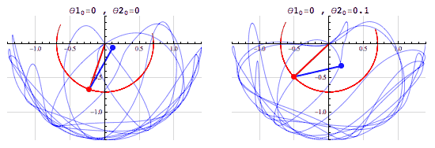
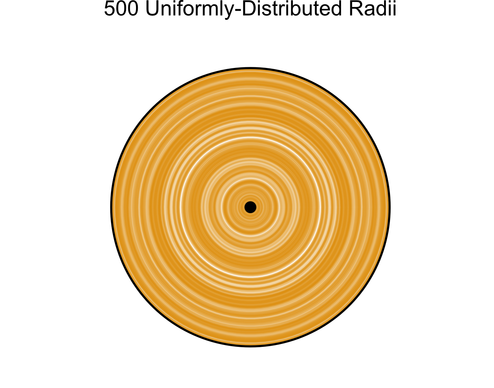
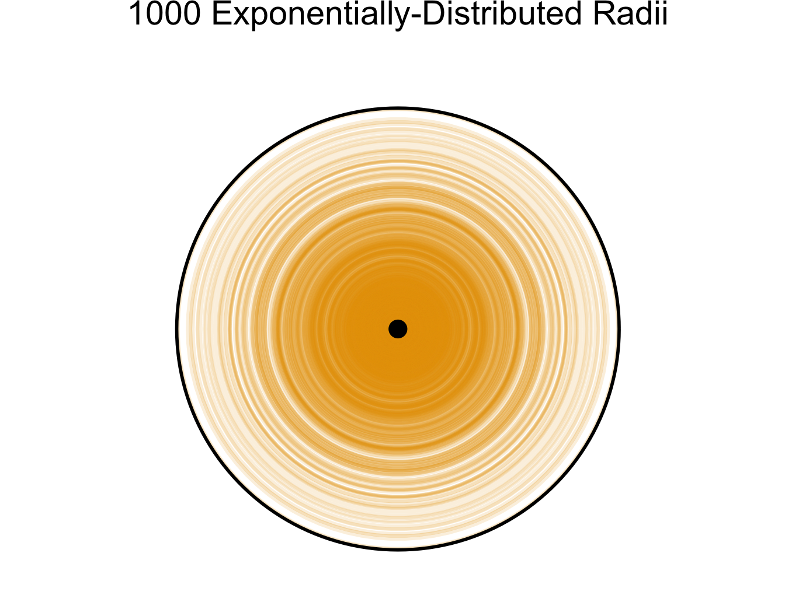
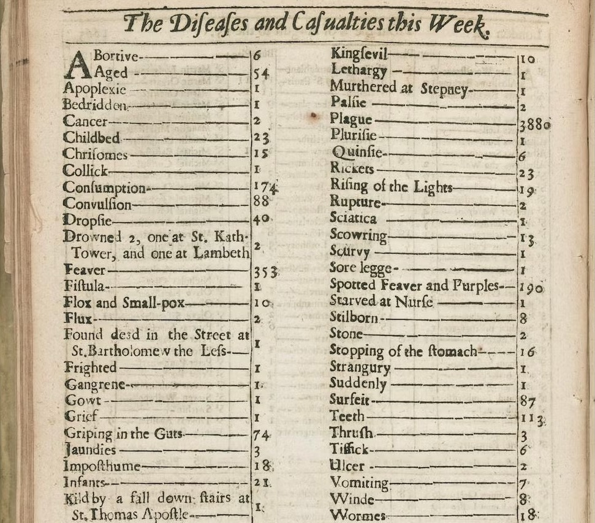
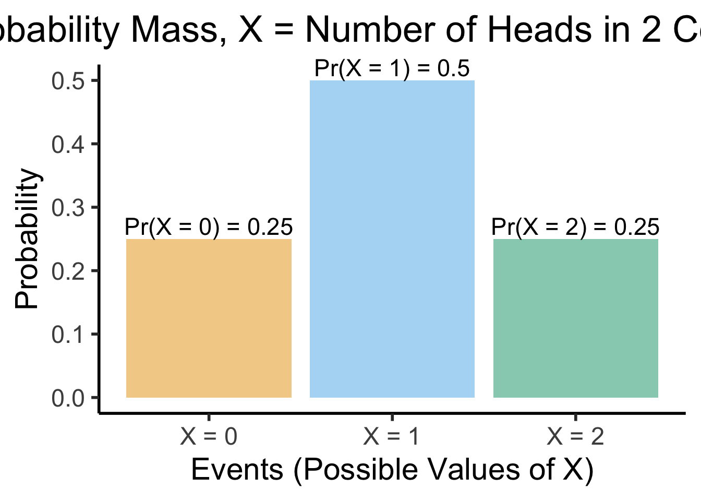
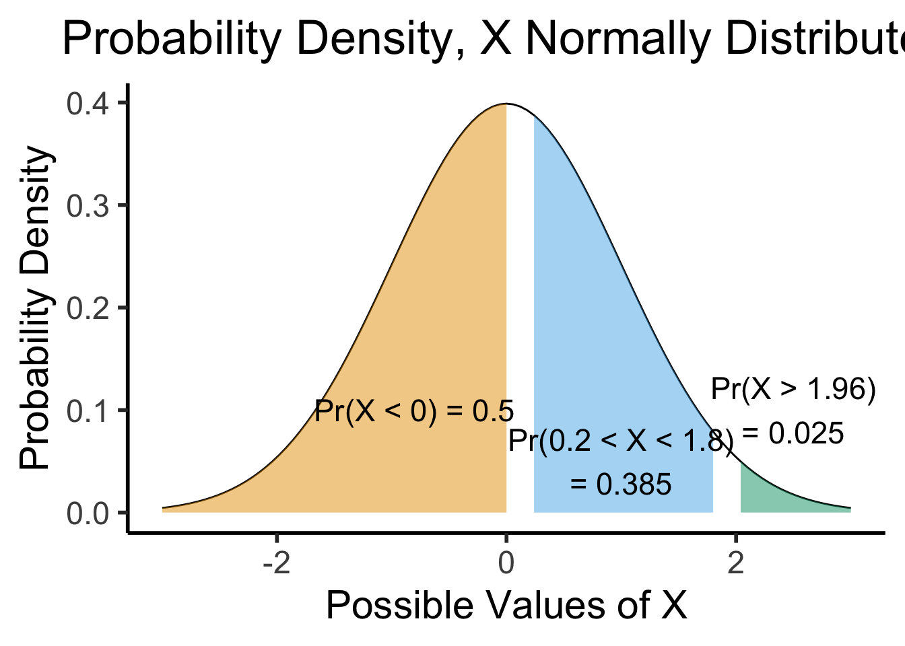
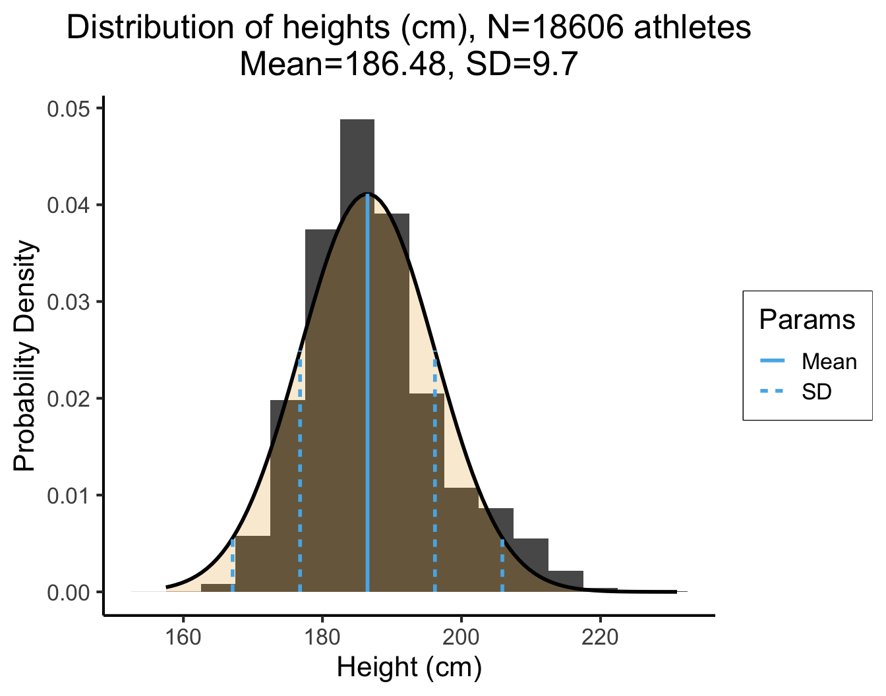
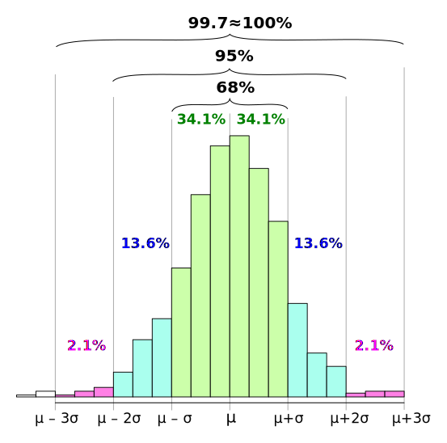
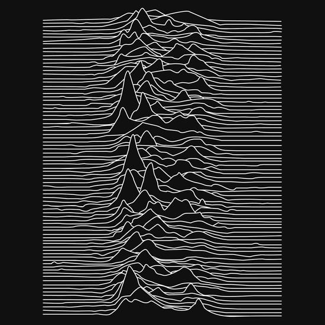

# For slides
library(ggplot2)
cbPalette <- c("#E69F00", "#56B4E9", "#009E73", "#F0E442", "#0072B2", "#D55E00", "#CC79A7")
options(ggplot2.discrete.colour = cbPalette)
# Theme generator, for given sizes
dsan_theme <- function(plot_type = "full") {
if (plot_type == "full") {
custom_base_size <- 16
} else if (plot_type == "half") {
custom_base_size <- 22
} else if (plot_type == "quarter") {
custom_base_size <- 28
} else {
# plot_type == "col"
custom_base_size <- 22
}
theme <- theme_classic(base_size = custom_base_size) +
theme(
plot.title = element_text(hjust = 0.5),
plot.subtitle = element_text(hjust = 0.5),
legend.title = element_text(hjust = 0.5),
legend.box.background = element_rect(colour = "black")
)
return(theme)
}
knitr::opts_chunk$set(fig.align = "center")
g_pointsize <- 5
g_linesize <- 1
# Technically it should always be linewidth
g_linewidth <- 1
g_textsize <- 14
remove_legend_title <- function() {
return(theme(
legend.title = element_blank(),
legend.spacing.y = unit(0, "mm")
))
}Week 2: Introduction to Probabilistic Modeling
DSAN 5100: Probabilistic Modeling and Statistical Computing
Section 03
Class Sessions
Schedule
| Start | End | Topic | |
|---|---|---|---|
| Lecture | 6:30pm | 6:40pm | About Me → |
| 6:40pm | 6:55pm | Review → | |
| 6:55pm | 7:10pm | Sampling and Combinatorics → | |
| 7:10pm | 7:25pm | Probability Fundamentals → | |
| 7:25pm | 7:50pm | Statistics Fundamentals → | |
| Break! | 7:50pm | 8:00pm | |
| Lab | 8:00pm | 8:50pm | Lab 1 Demonstrations |
| 8:50pm | 9:00pm | Lab Assignment Overview |
About Me
Prof. Jeff Introduction!
- Born and raised in NW DC → high school in Rockville, MD
- University of Maryland: Computer Science, Math, Economics (2008-2012)

Grad School
- Studied abroad in Beijing (Peking University/北大) → internship with Huawei in Hong Kong (HKUST)
- Stanford for MS in Computer Science (2012-2014)
- Research Economist at UC Berkeley (2014-2015)

- Columbia (NYC) for PhD[+Postdoc] in Political Science (2015-2023)
Dissertation (Political Science + History)
“Our Word is Our Weapon”: Text-Analyzing Wars of Ideas from the French Revolution to the First Intifada

Research (Labor Economics)
- “Monopsony in Online Labor Markets”: Machine Learning to enhance causal estimates of the effect of job description language on uptake rate
- “Freedom as Non-Domination in the Labor Market”: Game-theoretic models of workers’ rights (monopsony vs. labor discipline)
- “Unsupervised Extraction of Workplace Rights and Duties from Collective Bargaining Agreements”: Linguistic (dependency) parses of contracts → time series of worker vs. employer rights and responsibilities over time

Review
Deterministic Processes
- Given a set of inputs, we can compute the outcome exactly
- Example: Given the radius of a circle, we can compute its area without any uncertainty. \(r \mapsto \pi r^2\)
- (The fact that we can compute the outcome doesn’t mean that it’s easy to do so! See, e.g., the double pendulum)

The pendulum example points to the fact that the notion of a chaotic system, one which is “sensitive to initial conditions”, is different from that of a stochastic system.
“Holy Grail” Deterministic Model: Newtonian Physics
\[ \leadsto F_g = G\frac{m_1m_2}{r^2} \]
← Dr. Zirkel follows Newton’s famous steps. Coloured wood engraving. Wellcome Collection (Public Domain)
But What Happens When…
\[ \text{Outcome}\left(\text{Dice Roll}\right) = \; ?\frac{?_1?_2}{?^2} \]
Random Processes
- Can’t compute the outcome exactly, but can still say something about potential outcomes!
- Example: randomly chosen radius \(r \in [0,1]\), what can we say about \(A = \pi r^2\)?
- Unif: \([0,\pi]\) equally likely
- Exp: closer to \(0\) more likely
Code
plot_circ_with_distr <- function(N, radii, ptitle, alpha=0.1) {
theta <- seq(0, 360, 4)
#hist(radii)
circ_df <- expand.grid(x = theta, y = radii)
#circ_df
ggplot(circ_df, aes(x = x, y = y, group = y)) +
geom_path(alpha = alpha, color = cbPalette[1], linewidth=g_linesize) +
# Plot the full unit circle
geom_path(data = data.frame(x = theta, y = 1), aes(x = x), linewidth=g_linesize) +
geom_point(data = data.frame(x = 0, y = 0), aes(x = x), size = g_pointsize) +
coord_polar(theta = "x", start = -pi / 2, direction = -1) +
ylim(0, 1) +
# scale_x_continuous(limits=c(0,360), breaks=seq(0,360,by=45)) +
scale_x_continuous(limits = c(0, 360), breaks = NULL) +
dsan_theme("quarter") +
labs(
title = ptitle,
x = NULL,
y = NULL
) +
# See https://stackoverflow.com/a/19821839
theme(
axis.line = element_blank(),
axis.text = element_blank(),
axis.ticks = element_blank(),
axis.title = element_blank(),
panel.border = element_blank(),
panel.grid.major=element_blank(),
panel.grid.minor=element_blank(),
plot.margin = unit(c(0,0,0,0), "cm"),
title = element_text(size=18)
)
}
N <- 500
radii <- runif(N, 0, 1)
title <- paste0(N, " Uniformly-Distributed Radii")
alpha <- 0.2
plot_circ_with_distr(N, radii, title, alpha)
Code
library(ggplot2)
N <- 1000
radii <- rexp(N, 4)
title <- paste0(N, " Exponentially-Distributed Radii")
plot_circ_with_distr(N, radii, title, alpha=0.15)
Data = Ground Truth + Noise
- Depressing but true origin of statistics (as opposed to probability): the Plague 😷

Random Variables
- In algebra, to solve problems we work with variables
- In probability theory, to solve problems we work with random variables
- Recall the difference between random and deterministic: \(A = \pi r^2\) tells us that, given a value of \(r\), we can solve for the unique value of \(A\)
- In probability theory, however, there is no one “true” value of a random variable \(X\).
- Let \(X = f(N)\) mean that \(X\) is the result of a rolled die, where the die has \(N\) sides.
- Plugging in \(N = 6\) (standard 6-sided die) still doesn’t mean we know “the” value of \(X\). However, (if the die is fair) we do know
\[ \Pr(X = 1) = \Pr(X = 2) = \cdots = \Pr(X = 6) = \frac{1}{6} \]
Discrete vs. Continuous
- Many complicated definitions, often misleading or unintuitive!
- How I want you to remember: How many possible values between two known values?
- Discrete: e.g., number of siblings
- I have 2 siblings, you have 3 siblings… How many values (sibling counts) in between?
- Continuous: e.g., temperature
- It is 27.0° C in my room, 28.0° C in your room… How many values (temperatures) in between?
- So, if \(X\) is the result of a rolled die, is \(X\) discrete or continuous? How many values can be rolled between 3 and 4?
Thinking About Independence
- We’ll define it formally later; for now, this is our working definition:
Combinatorics
Naïve Definition of Probability
- Sample Space: The set of all possible outcomes of an experiment
- Event: A subset of the sample space
Example: Flipping Two Coins
- Sample space \(S = \{TT, TH, HT, HH\}\)
- Event \(E_1\): Result of first flip is \(H\), result of second flip is \(T\) \(\implies\) \(E_1 = \{HT\}\)
- Event \(E_2\): At least one \(H\) \(\implies\) \(E_2 = \{TH, HT, HH\}\)
\[ \begin{align*} \Pr(E_1) &= \frac{|\{HT\}|}{|S|} = \frac{|\{HT\}|}{|\{TT, TH, HT, HH\}|} = \frac{1}{4} \\ \Pr(E_2) &= \frac{|\{TH, HT, HH\}|}{|S|} = \frac{|\{TH, HT, HH\}|}{|\{TT, TH, HT, HH\}|} = \frac{3}{4} \end{align*} \]
Events \(\neq\) Outcomes!
- Outcomes are things, events are sets of things
- Subtle but extremely important distinction!
- In the coin flip example:
- The event \(E_1 = \{HT\}\) can be confused with the outcome \(HT\).
- So, try to remember instead the event \(E_2 = \{TH, HT, HH\}\): it is more clear, in this case, how this event does not correspond to any individual outcome
Back to the Naïve Definition
- The naïve definition tells us that probabilities are just ratios of counts:
- Count the number of ways the event \(E\) can happen, count the total number of things that can happen, and divide!
- This is why we begin studying probability by studying combinatorics: the mathematics of counting
Combinatorics: Ice Cream Possibilities
Grouping vs. Ordering
- In standard statistics/combinatorics introductions you’ll learn different counting formulas for when order matters vs. when order doesn’t matter
- This is not a mathematical distinction so much as a pragmatic distinction: what are you trying to accomplish by counting?
- Problems with extremely similar descriptions can differ in small detail, so that the units you need to distinguish between in one version differ from the units you need to distinguish between in the other.
Does Order Matter?
- Simple case (for intuition): school only has 4 students. In this case, how many ways are there to form the swim team? What about the student government?
- Swim team: \(1\) way. You have only one choice, let all 4 students onto team
- Student government: \(4 \cdot 3 \cdot 2 \cdot 1 = 24\) ways. You have to let all 4 in, but you have a choice of who is President, Vice President, Secretary, and Treasurer
- How did we get \(4 \cdot 3 \cdot 2 \cdot 1\)? (Think about the ice cream example…)
- Start by choosing the President: 4 choices
- Now choose the Vice President: only 3 students left to choose from
- Now choose the Secretary: only 2 students left to choose from
- Now choose the Treasurer: only 1 student left to choose from
Permutations vs. Combinations
- Permutations: How many ways can I choose groups of size \(k\) out of \(n\) total objects, where order within groups matters: \(P_{n,k}\) (sometimes written \(_nP_k\)).
- In this case, we want to count \((a,b)\) and \((b,a)\) as two separate groups
- Combinations: How many ways can I choose groups of size \(k\) out of \(n\) total objects, where order in the groups doesn’t matter: \(C_{n,k}\) (sometimes written \(_nC_k,\binom{n}{k}\)).
- In this case, we don’t want to count \((a, b)\) and \((b, a)\) as two separate groups…
\[ \begin{align*} P_{n,k} = \frac{n!}{(n-k)!}, \; C_{n,k} = \frac{n!}{k!(n-k)!} \end{align*} \]
No Need to Memorize!
- Key point: you don’t have to remember these as two separate formulas!
- The number of combinations is based on the number of permutations, but corrected for double counting: e.g., corrected for the fact that \((a,b) \neq (b,a)\) when counting permutations but \((a,b) = (b,a)\) when counting combinations.
\[ C_{n,k} = \frac{P_{n,k}}{k!} \genfrac{}{}{0pt}{}{\leftarrow \text{Permutations}}{\leftarrow \text{Duplicate groups}} \]
Where does \(k!\) come from? (How many different orderings can we make of the same group?)
\(k = 2\): \((\underbrace{\boxed{\phantom{a}}}_{\text{2 choices}},\underbrace{\boxed{\phantom{a}}}_{\text{1 remaining choice}}) \implies 2\)
\(k = 3\): \((\underbrace{\boxed{\phantom{a}}}_{\text{3 choices}},\underbrace{\boxed{\phantom{a}}}_{\text{2 remaining choices}}, \underbrace{\boxed{\phantom{a}}}_{\text{1 remaining choice}}) \implies 6\)
\(k = 4\): \((\underbrace{\boxed{\phantom{a}}}_{\text{4 choices}}, \underbrace{\boxed{\phantom{a}}}_{\text{3 remaining choices}}, \underbrace{\boxed{\phantom{a}}}_{\text{2 remaining choices}}, \underbrace{\boxed{\phantom{a}}}_{\text{1 remaining choice}}) \implies 24\)
With or Without Replacement?
- Boils down to: can the same object be included in my sample more than once?
| Without Replacement | With Replacement |
|---|---|
| Most statistical problems: “Check off” objects as you collect data about them, so that each observation in your data is unique | Special (but important!) set of statistical problems: let objects appear in your sample multiple times, to “squeeze” more information out of the sample (called Bootstrapping—much more later in the course!) |
How Many Possible Samples?
Example: From \(N = 3\) population, how many ways can we take samples of size \(k = 2\)?
| Without Replacement | With Replacement |
|---|---|
| \(3 \cdot 2 = 6\) ways (3 objects to choose from for first element of sample, 2 remaining objects to choose from for second element of sample) | \(3\cdot 3 = 3^2 = 9\) ways (3 objects to choose from for first element of sample, still 3 objects to choose from for second element of sample) |
General Case: From population of size \(N\), how many ways can we take samples of size \(k\)? (Try to extrapolate from above example before looking at answer!)
| Without Replacement | With Replacement |
|---|---|
| \(\displaystyle \underbrace{N \cdot (N-1) \cdot \cdots \cdot (N - k + 1)}_{k\text{ times}} = \frac{N!}{(N - k )!}\) (This formula should look somewhat familiar…) |
\(\displaystyle \underbrace{N \cdot N \cdot \cdots \cdot N}_{k\text{ times}} = N^k\) |
Probability Fundamentals
Logic, Sets, and Probability
There is a deep connection1 between the objects and operations of logic, set theory, and probability:
| Logic | Set Theory | Probability Theory | |
|---|---|---|---|
| Objects | Predicates \(p, q \in \{T, F\}\) |
Sets \(S = \{a, b, \ldots\}\) |
Events \(E = \{TH, HT, HH\}\) |
| Conjunction | And (\(\wedge\)) \(p \wedge q\) |
Intersection (\(\cap\)) \(A \cap B\) |
Multiplication (\(\times\)): \(\Pr(E_1 \cap E_2) = \Pr(E_1)\times \Pr(E_2)\) |
| Disjunction | Or (\(\vee\)) \(p \vee q\) |
Union (\(\cup\)) \(A \cup B\) |
Addition (\(+\)): \(\Pr(E_1 \cup E_2) =\) \(\Pr(E_1) + \Pr(E_2) - \Pr(E_1 \wedge E_2)\) |
| Negation | Not (\(\neg\)) \(\neg p\) |
Complement (\(^c\)) \(S^c\) |
Subtract from 1 \(\Pr(A^c) = 1 - \Pr(A)\) |
Example: Flipping Two Coins
- Logic: We can define 4 predicates:
- \(p_1\) = “First result is \(H\)”, \(q_1\) = “First result is \(T\)”
- \(p_2\) = “Second result is \(H\)”, \(q_2\) = “Second result is \(T\)”
- Logical formulas:
- \(f_1 = p_1 \wedge q_2\): “First result is \(H\) and second result is \(T\)”
- \(f_2 = p_1 \vee q_2\): “First result is \(H\) or second result is \(T\)”
- \(f_3 = \neg p_1\): “First result is not \(H\)”
- The issue?: We don’t know, until after the coins have been flipped, whether these are true or false!
- But, we should still be able to say something about their likelihood, for example, whether \(f_1\) or \(f_2\) is more likely to happen… Enter probability theory!
Logic \(\rightarrow\) Probability
- Probability theory lets us reason about the uncertainty surrounding logical predicates like \(p\) and \(q\), by:
- encoding them as sets of possibilities \(P\) and \(Q\), and
- representing uncertainty around a given possibility using a probability measure \(\Pr: S \mapsto [0,1]\),
- thus allowing us to reason about
- the likelihood of these set-encoded predicates on their own: \(\Pr(P)\) and \(\Pr(Q)\), but also
- their logical connections: \(\Pr(p \wedge q) = \Pr(P \cap Q)\), \(\Pr(\neg p) = \Pr(P^c)\), and so on.
Flipping Two Coins: Logic \(\rightarrow\) Probability
- Returning to the two coins example: we can look at the predicates and see that they exhaust all possibilities, so that we can define a sample space \(S = \{TT, TH, HT, HH\}\) of all possible outcomes of our coin-flipping experiment, noting that \(|S| = 4\), so there are 4 possible outcomes.
- Then we can associate each predicate with an event, a subset of the sample space, and use our naïve definition to compute the probability of these events:
| Predicate | Event | Probability |
|---|---|---|
| \(p_1\) = “First result is \(H\)” | \(P_1 = \{HT, HH\}\) | \(\Pr(P_1) = \frac{|P_1|}{|S|} = \frac{2}{4} = \frac{1}{2}\) |
| \(q_1\) = “First result is \(T\)” | \(Q_1 = \{TT, TH\}\) | \(\Pr(Q_1) = \frac{|Q_1|}{|S|} = \frac{2}{4} = \frac{1}{2}\) |
| \(p_2\) = “Second result is \(H\)” | \(P_2 = \{TH, HH\}\) | \(\Pr(P_2) = \frac{|P_2|}{|S|} = \frac{2}{4} = \frac{1}{2}\) |
| \(q_2\) = “Second result is \(T\)” | \(Q_2 = \{TT, HT\}\) | \(\Pr(Q_2) = \frac{|Q_2|}{|S|} = \frac{2}{4} = \frac{1}{2}\) |
Moving from Predicates to Formulas
- Notice that, in the four rows of the previous table, we were only computing the probabilities of “simple” events: events corresponding to a single predicate
- But we promised that probability theory lets us compute probabilities for logical formulas as well! …The magic of encoding events as sets becomes clear:
| Formula | Event | Probability |
|---|---|---|
| \(f_1 = p_1 \wedge q_2\) | \[ \begin{align*} F_1 &= P_1 \cap Q_2 \\ &= \{HT, HH\} \cap \{TT, HT\} \\ &= \{HT\} \end{align*} \] | \[\begin{align*} \Pr(F_1) &= \Pr(\{HT\}) \\ &= \frac{|\{HT\}|}{|S|} = \frac{1}{4} \phantom{= \frac{1}{4} = \frac{1}{4}} \end{align*}\] |
| \(f_2 = p_1 \vee q_2\) | \[\begin{align*} F_2 &= P_1 \cup Q_2 \\ &= \{HT, HH\} \cup \{TT, HT\} \\ &= \{TT, HT, HH\} \end{align*}\] | \[\begin{align*} \Pr(F_2) &= \Pr(\{TT, HT, HH\}) \\ &= \frac{|\{TT, HT, HH\}|}{|S|} = \frac{3}{4} \end{align*}\] |
| \(f_3 = \neg p_1\) | \[\begin{align*} F_3 &= P_1^c \\ &= \{HT, HH\}^c \phantom{\cup \{TT, HT\}} \\ &= \{TT, TH\}\end{align*}\] | \[\begin{align*} \Pr(F_3) &= \Pr(\{TT, TH\}) \\ &= \frac{|\{TT, TH\}|}{|S|} = \frac{2}{4} = \frac{1}{2} \end{align*}\] |
Using “Rules” of Probability
- Hopefully, you found all this churning through set theory to be tedious… ☠️
- This is where rules of probability come from! They simplify set-theoretic computations into simple multiplications, additions, and subtractions:
- \(\Pr(A \cap B) = \Pr(A) \times \Pr(B)\)
- \(\Pr(A \cup B) = \Pr(A) + \Pr(B) - \Pr(A \cap B)\)
- \(\Pr(A^c) = 1 - \Pr(A)\)
- Since we know probabilities of the “simple” events \(P_1\), \(Q_1\), \(P_2\), \(Q_2\), we don’t need to “look inside them”! Just take the probabilities and multiply/add/subtract as needed:
| Formula | Event | Probability |
|---|---|---|
| \(f_1 = p_1 \wedge q_2\) | \(F_1 = P_1 \cap Q_2\) | \(\Pr(F_1) = \Pr(P_1) \times \Pr(Q_2) = \frac{1}{2}\times \frac{1}{2} = \frac{1}{4}\) |
| \(f_2 = p_1 \vee q_2\) | \(F_2 = P_1 \cup Q_2\) | \[\textstyle{\begin{align*} \textstyle \Pr(F_2) &= \Pr(P_1) + \Pr(Q_2) - \Pr(P_1 \cap Q_2) \\ \textstyle &= \frac{1}{2} + \frac{1}{2} - \frac{1}{4} = \frac{3}{4} \end{align*}}\] |
| \(f_3 = \neg p_1\) | \(F_3 = P_1^c\) | \(\Pr(F_3) = 1 - \Pr(P_1) = 1 - \frac{1}{2} = \frac{1}{2}\) |
“Importing” Results from Logic
- This deep connection between the three fields means that, if we have some useful theorem or formula from one field, we can immediately put it to use in another!
- For example: DeMorgan’s Laws were developed in logic (DeMorgan was a 19th-century logician), and basically just tell us how to distribute logic operators:
\[ \begin{align*} \underbrace{\neg(p \wedge q)}_{\text{``}p\text{ and }q\text{'' is not true}} &\iff \underbrace{\neg p \vee \neg q}_{p\text{ is not true or }q\text{ is not true}} \\ \underbrace{\neg(p \vee q)}_{\text{``}p\text{ or }q\text{'' is not true}} &\iff \underbrace{\neg p \wedge \neg q}_{p\text{ is not true and }q\text{ is not true}} \end{align*} \]
Converting to Probability Theory
- So, using the same principles we used in our coin flipping examples, we can consider events \(P\) and \(Q\), and get the following “translation” of DeMorgan’s Laws:
| Logic | Set Theory | Probability Theory |
|---|---|---|
| \(\neg(p \wedge q) = \neg p \vee \neg q\) | \((P \cap Q)^c = P^c \cup Q^c\) | \(\Pr((P \cap Q)^c) = \Pr(P^c \cup Q^c)\) |
| \(\neg(p \vee q) = \neg p \wedge \neg q\) | \((P \cup Q)^c = P^c \cap Q^c\) | \(\Pr((P \cup Q)^c) = \Pr(P^c \cap Q^c)\) |
- Note that, since these are isomorphic to one another, we could have derived DeMorgan’s Laws from within probability theory, rather than the other way around:
\[ \begin{align*} \Pr((P \cap Q)^c) &= 1 - \Pr(P \cap Q) = 1 - \Pr(P)\Pr(Q) \\ &= 1 - (1-\Pr(P^c))(1 - \Pr(Q^c)) \\ &= 1 - [1 - \Pr(P^c) - \Pr(Q^c) + \Pr(P^c)\Pr(Q^c)] \\ &= \Pr(P^c) + \Pr(Q^c) - \Pr(P^c)\Pr(Q^c) \\ &= \Pr(P^c) + \Pr(Q^c) - \Pr(P^c \cap Q^c) \\ &= \Pr(P^c \cup Q^c) \; ✅ \end{align*} \]
Statistics: Univariate and Multivariate
Random Variables
- Recall our discussion of random variables: used by analogy to algebra, since we can do math with them:
- Just as \(2 \cdot 3\) is shorthand for \(2 + 2 + 2\), can define \(X\) as shorthand for possible outcomes of random process:
\[ \begin{align*} S = \{ &\text{result of dice roll is 1}, \\ &\text{result of dice roll is 2}, \\ &\text{result of dice roll is 3}, \\ &\text{result of dice roll is 4}, \\ &\text{result of dice roll is 5}, \\ &\text{result of dice roll is 6}\} \rightsquigarrow X \in \{1,\ldots,6\} \end{align*} \]
Random Variables as Events
- Each value \(v_X\) that a random variable \(X\) can take on gives rise to an event \(X = v_X\): the event that the random variable \(X\) takes on value \(v\).
- Since \(X = v_X\) is an event, we can compute its probability \(\Pr(X = v_X)\)!
| Event in words | Event in terms of RV |
|---|---|
| Result of dice roll is 1 | \(X = 1\) |
| Result of dice roll is 2 | \(X = 2\) |
| Result of dice roll is 3 | \(X = 3\) |
| Result of dice roll is 4 | \(X = 4\) |
| Result of dice roll is 5 | \(X = 5\) |
| Result of dice roll is 6 | \(X = 6\) |
Doing Math with Events
- We’ve seen how \(\Pr()\) “encodes” logical expressions involving uncertain outcomes.
- Even more powerful when paired with the notion of random variables: lets us also “encode” mathematical expressions involving uncertain quantities!
- Consider an experiment where we roll two dice. Let \(X\) be the RV encoding the outcome of the first roll, and \(Y\) be the RV encoding the outcome of the second roll.
- We can compute probabilities involving \(X\) and \(Y\) separately, e.g., \(\Pr(X = 1) = \frac{1}{6}\), but we can also reason probabilistically about mathematical expressions involving \(X\) and \(Y\)! For example, we can reason about their sum:
\[ \begin{align*} \Pr(\text{rolls sum to 10}) &= \Pr(X + Y = 10) \\ &= \Pr(Y = 10 - X) \end{align*} \]
- Or about how the outcome of one roll will relate to the outcome of the other:
\[ \begin{align*} \Pr(\text{first roll above mean}) &= \Pr\left(X > \frac{X+Y}{2}\right) \\ &= \Pr(2X > X+Y) = \Pr(X > Y) \end{align*} \]
Are Random Variables All-Powerful??
- Just remember that probability \(P(\cdot)\) is always probability of an event—random variables are just shorthand for quantifiable events.
- Not all events can be simplified via random variables!
- \(\text{catch a fish} \mapsto P(\text{trout}), P(\text{bass}), \ldots\)
- What types of events can be quantified like this?
- (Hint: It has to do with a key topic in the early weeks of both DSAN 5000 and 5100…)
The answer is, broadly, any situation where you’re modeling things, like dice rolls, where mathematical operations like addition, multiplication, etc. make sense. So, if we’re modeling dice, it makes sense to say e.g. “result is 6” + “result is 3” = “total is 9”. More on the next page!
Recall: Types of Variables
- Categorical
- No meaningful way to order values: \(\{\text{trout}, \text{bass}, \ldots \}\)
- Ordinal
- Can place in order (bigger, smaller), though gaps aren’t meaningful: \(\{{\color{orange}\text{great}},{\color{orange}\text{greater}},{\color{orange}\text{greatest}}\}\)
- \({\color{orange}\text{greater}} \overset{?}{=} 2\cdot {\color{orange}\text{great}} - 1\)
- Cardinal
- Can place in order, and gaps are meaningful \(\implies\) can do “standard” math with them! Example: \(\{{\color{blue}1},{\color{blue}2},\ldots,{\color{blue}10}\}\)
- \({\color{blue}7} \overset{\text{~✅~}}{=} 2 \cdot {\color{blue}4} - 1\)
- If events have this structure (meaningful way to define multiplication, addition, subtraction), then we can analyze them as random variables
Visualizing Discrete RVs
- Ultimate Probability Pro-Tip: When you hear “discrete distribution”, think of a bar graph: \(x\)-axis = events, bar height = probability of events
- Two coins example: \(X\) = RV representing number of heads obtained in two coin flips

(Preview:) Visualizing Continuous RVs
- This works even for continuous distributions, if you focus on the area under the curve instead of the height:
funcShaded <- function(x, lower_bound, upper_bound) {
y <- dnorm(x)
y[x < lower_bound | x > upper_bound] <- NA
return(y)
}
funcShadedBound1 <- function(x) funcShaded(x, -Inf, 0)
funcShadedBound2 <- function(x) funcShaded(x, 0.2, 1.8)
funcShadedBound3 <- function(x) funcShaded(x, 2, Inf)
norm_plot <- ggplot(data.frame(x=c(-3,3)), aes(x = x)) +
stat_function(fun = dnorm) +
labs(
title="Probability Density, X Normally Distributed",
x="Possible Values of X",
y="Probability Density"
) +
dsan_theme("half") +
theme(legend.position = "none") +
coord_cartesian(clip = "off")
label_df <- tribble(
~x, ~y, ~label,
-0.8, 0.1, "Pr(X < 0) = 0.5",
1.0, 0.05, "Pr(0.2 < X < 1.8)\n= 0.385",
2.5,0.1,"Pr(X > 1.96)\n= 0.025"
)
shaded_plot <- norm_plot +
stat_function(fun = funcShadedBound1, geom = "area", fill=cbPalette[1], alpha = 0.5) +
stat_function(fun = funcShadedBound2, geom = "area", fill=cbPalette[2], alpha = 0.5) +
stat_function(fun = funcShadedBound3, geom = "area", fill=cbPalette[3], alpha = 0.5) +
geom_text(label_df, mapping=aes(x = x, y = y, label = label), size=6)
shaded_plot
Probability Theory Gives Us Distributions for RVs, not Numbers!
- We’re going beyond “base” probability theory if we want to summarize these distributions
- However, we can understand a lot about the full distribution by looking at some basic summary statistics. Most common way to summarize:
| \(\underbrace{\text{point estimate}}_{\text{mean/median}}\) | \(\pm\) | \(\underbrace{\text{uncertainty}}_{\text{variance/standard deviation}}\) |
Example: Game Reviews
library(readr)
fig_title <- "Reviews for a Popular Nintendo Switch Game"
#score_df <- read_csv("https://gist.githubusercontent.com/jpowerj/8b2b6a50cef5a682db640e874a14646b/raw/bbe07891a90874d1fe624224c1b82212b1ac8378/totk_scores.csv")
score_df <- read_csv("https://gist.githubusercontent.com/jpowerj/8b2b6a50cef5a682db640e874a14646b/raw/e3c2b9d258380e817289fbb64f91ba9ed4357d62/totk_scores.csv")
mean_score <- mean(score_df$score)
library(ggplot2)
ggplot(score_df, aes(x=score)) +
geom_histogram() +
#geom_vline(xintercept=mean_score) +
labs(
title=fig_title,
x="Review Score",
y="Number of Reviews"
) +
dsan_theme("full")
Adding a Single Line
library(readr)
mean_score <- mean(score_df$score)
mean_score_label <- sprintf("%0.2f", mean_score)
library(ggplot2)
ggplot(score_df, aes(x=score)) +
geom_histogram() +
geom_vline(aes(xintercept=mean_score, linetype="dashed"), color="purple", size=1) +
scale_linetype_manual("", values=c("dashed"="dashed"), labels=c("dashed"="Mean Score")) +
# Add single additional tick
scale_x_continuous(breaks=c(60, 70, 80, 90, mean_score, 100), labels=c("60","70","80","90",mean_score_label,"100")) +
labs(
title=fig_title,
x="Review Score",
y="Number of Reviews"
) +
dsan_theme("full") +
theme(
legend.title = element_blank(),
legend.spacing.y = unit(0, "mm")
) +
theme(axis.text.x = element_text(colour = c('black', 'black','black', 'black', 'purple', 'black')))
Or a Single Ribbon
library(tibble)
N <- 10
# Each x value gets 10 y values
x <- sort(rep(seq(1,10),10))
y <- x + rnorm(length(x), 0, 5)
df <- tibble(x=x,y=y)
total_N <- nrow(df)
ggplot(df, aes(x=x,y=y)) +
geom_point(size=g_pointsize) +
dsan_theme("column") +
labs(
title=paste0("N=",total_N," Randomly-Generated Points")
)
# This time, just the means
library(dplyr)
mean_df <- df %>% group_by(x) %>% summarize(mean=mean(y), min=min(y), max=max(y))
ggplot(mean_df, aes(x=x, y=mean)) +
geom_ribbon(aes(ymin=min, ymax=max, fill="ribbon"), alpha=0.5) +
geom_point(aes(color="mean"), size=g_pointsize) +
geom_line(size=g_linesize) +
dsan_theme("half") +
scale_color_manual("", values=c("mean"="black"), labels=c("mean"="Mean")) +
scale_fill_manual("", values=c("ribbon"=cbPalette[1]), labels=c("ribbon"="Range")) +
remove_legend_title() +
labs(
title=paste0("Means of N=",total_N," Randomly-Generated Points")
)
library(tibble)
N <- 100
# Each x value gets 10 y values
x <- sort(rep(seq(1,10),10))
y <- x + rnorm(length(x), 0, 1)
df <- tibble(x=x,y=y)
total_N <- nrow(df)
ggplot(df, aes(x=x,y=y)) +
geom_point(size=g_pointsize) +
dsan_theme("column") +
labs(
title=paste0("N=",total_N," Randomly-Generated Points")
)
# This time, just the means
library(dplyr)
mean_df <- df %>% group_by(x) %>% summarize(mean=mean(y), min=min(y), max=max(y))
ggplot(mean_df, aes(x=x, y=mean)) +
geom_ribbon(aes(ymin=min, ymax=max, fill="ribbon"), alpha=0.5) +
geom_point(aes(color="mean"), size=g_pointsize) +
geom_line(size=g_linesize) +
dsan_theme("half") +
scale_color_manual("", values=c("mean"="black"), labels=c("mean"="Mean")) +
scale_fill_manual("", values=c("ribbon"=cbPalette[1]), labels=c("ribbon"="Range")) +
remove_legend_title() +
labs(
title=paste0("Means of N=",total_N," Randomly-Generated Points")
)


Example: The Normal Distribution
vlines_std_normal <- tibble::tribble(
~x, ~xend, ~y, ~yend, ~Params,
0, 0, 0, dnorm(0), "Mean",
-2, -2, 0, dnorm(-2), "SD",
-1, -1, 0, dnorm(-1), "SD",
1, 1, 0, dnorm(1), "SD",
2, 2, 0, dnorm(2), "SD"
)
ggplot(data.frame(x = c(-3, 3)), aes(x = x)) +
stat_function(fun = dnorm, linewidth = g_linewidth) +
geom_segment(data=vlines_std_normal, aes(x=x, xend=xend, y=y, yend=yend, linetype = Params), linewidth = g_linewidth, color="purple") +
geom_area(stat = "function", fun = dnorm, fill = cbPalette[1], xlim = c(-3, 3), alpha=0.2) +
#geom_area(stat = "function", fun = dnorm, fill = "blue", xlim = c(0, 2))
dsan_theme("quarter") +
labs(
x = "v",
y = "Density f(v)"
)
- “RV \(X\) is normally distributed with mean \({\color{purple}\mu}\) and standard deviation \({\color{purple}\sigma}\)”
- The parameters in this case give natural summaries of the data:
- \({\color{\purple}\mu}\) = center (mean), \({\color{purple}\sigma}\) = [square root of] variance around center
- Mean can usually be interpreted intuitively; for standard deviation, can use the 68-95-99.7 rule, which will make more sense relative to some real-world data…
Real Data and the 68-95-99.7 Rule
Code
library(readr)
height_df <- read_csv("https://gist.githubusercontent.com/jpowerj/9a23807fb71a5f6b6c2f37c09eb92ab3/raw/89fc6b8f0c57e41ebf4ce5cdf2b3cad6b2dd798c/sports_heights.csv")
mean_height <- mean(height_df$height_cm)
sd_height <- sd(height_df$height_cm)
height_density <- function(x) dnorm(x, mean_height, sd_height)
m2_sd <- mean_height - 2 * sd_height
m1_sd <- mean_height - 1 * sd_height
p1_sd <- mean_height + 1 * sd_height
p2_sd <- mean_height + 2 * sd_height
vlines_data <- tibble::tribble(
~x, ~xend, ~y, ~yend, ~Params,
mean_height, mean_height, 0, height_density(mean_height), "Mean",
m2_sd, m2_sd, 0, height_density(m2_sd), "SD",
m1_sd, m1_sd, 0, height_density(m1_sd), "SD",
p1_sd, p1_sd, 0, height_density(p1_sd), "SD",
p2_sd, p2_sd, 0, height_density(p2_sd), "SD"
)
ggplot(height_df, aes(x = height_cm)) +
geom_histogram(aes(y = after_stat(density)), binwidth = 5.0) +
#stat_function(fun = height_density, linewidth = g_linewidth) +
geom_area(stat = "function", fun = height_density, color="black", linewidth = g_linewidth, fill = cbPalette[1], alpha=0.2) +
geom_segment(data=vlines_data, aes(x=x, xend=xend, y=y, yend=yend, linetype = Params), linewidth = g_linewidth, color=cbPalette[2]) +
labs(
title=paste0("Distribution of heights (cm), N=",nrow(height_df)," athletes\nMean=",round(mean_height,2),", SD=",round(sd_height,2)),
x="Height (cm)",
y="Probability Density"
) +
dsan_theme("full")


The point estimate \({\color{purple}\mu} = 186.48\) is straightforward: the average height of the athletes is 186.48cm. Using the 68-95-99.7 Rule to interpret the SD, \({\color{purple}\sigma} = 9.7\), we get:
| [\({\color{purple}\mu} - 1\cdot {\color{purple}\sigma}\) | and | \({\color{purple}\mu} + 1\cdot {\color{purple}\sigma}\)] |
| [186.48 - 1 · 9.7 | and | 186.48 + 1 · 9.7] |
| [176.78 | and | 196.18] |
| [\({\color{purple}\mu} - 2 \cdot {\color{purple}\sigma}\) | and | \({\color{purple}\mu} + 2 \cdot {\color{purple}\sigma}\)] |
| [186.48 - 2 · 9.7 | and | 186.48 + 2 · 9.7] |
| [167.08 | and | 205.88] |
Boxplots: Comparing Multiple Distributions


Another Option: Joyplots


Multivariate Distributions: Preview
- The bivariate normal distribution represents the distribution of two normally-distributed RVs \(\mathbf{X} = [\begin{smallmatrix} X_1 & X_2\end{smallmatrix}]\), which may or may not be correlated:
\[ \mathbf{X} = \begin{bmatrix}X_1 \\ X_2\end{bmatrix}, \; \boldsymbol{\mu} = %\begin{bmatrix}\mu_1 \\ \mu_2\end{bmatrix} \begin{bmatrix}\smash{\overbrace{\mu_1}^{\mathbb{E}[X_1]}} \\ \smash{\underbrace{\mu_2}_{\mathbb{E}[X_2]}}\end{bmatrix} , \; \mathbf{\Sigma} = \begin{bmatrix}\smash{\overbrace{\sigma_1^2}^{\text{Var}[X_1]}} & \smash{\overbrace{\rho\sigma_1\sigma_2}^{\text{Cov}[X_1,X_2]}} \\ \smash{\underbrace{\rho\sigma_2\sigma_1}_{\text{Cov}[X_2,X_1]}} & \smash{\underbrace{\sigma_2^2}_{\text{Var}[X_2]}}\end{bmatrix} % \begin{bmatrix}\sigma_1^2 & \rho\sigma_1\sigma_2 \\ \rho\sigma_2\sigma_1 & \sigma_2^2 \end{bmatrix} % = \begin{bmatrix}\text{Var}[X_1] & \text{Cov}[X_1,X_2] \\ \text{Cov}[X_2,X_1] & \text{Var}[X_2] \end{bmatrix} \]
- By squishing all this information intro matrices, we can specify the parameters of multivariate-normally-distributed vectors of RVs similarly to how we specify single-dimensional normally-distributed RVs:
\[ \begin{align*} \overbrace{X}^{\mathclap{\text{scalar}}} &\sim \mathcal{N}\phantom{_k}(\overbrace{\mu}^{\text{scalar}}, \overbrace{\sigma}^{\text{scalar}}) \tag{Univariate} \\ \underbrace{\mathbf{X}}_{\text{vector}} &\sim \boldsymbol{\mathcal{N}}_k(\smash{\underbrace{\boldsymbol{\mu}}_{\text{vector}}}, \underbrace{\mathbf{\Sigma}}_{\text{matrix}}) \tag{Multivariate} \end{align*} \]
Note: In the future I’ll use the notation \(\mathbf{X}_{[a \times b]}\) to denote the dimensions of the vectors/matrices, like \(\mathbf{X}_{[k \times 1]} \sim \boldsymbol{\mathcal{N}}_k(\boldsymbol{\mu}_{[k \times 1]}, \mathbf{\Sigma}_{[k \times k]})\)
Visualizing 3D Distributions: Projection
- Most of our intuitions about plots come from 2D \(\Rightarrow\) super helpful exercise to take a 3D plot like this and imagine “projecting” it onto different 2D surfaces:

Visualizing 3D Distributions: Contours

{kind=link}
{kind=link}
{kind=link}
Visualizing 3D Distributions: Contours